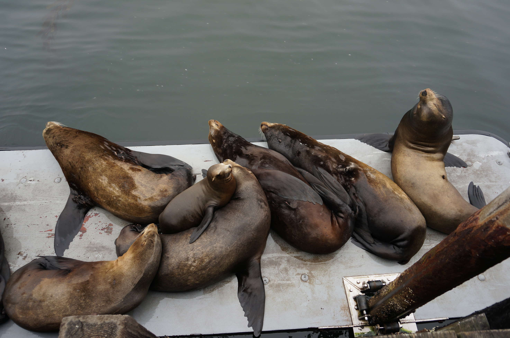

We drove through the desert to get here, stopping briefly at Fresno for breakfast and to go to an internet cafe.
We tried a bunch of campsites on the outskirts of Santa Cruz, but as it was a Friday in August everywhere was full (we literally called 10 places). The rules here also don't allow camping by the side of the road, so we ended up just asking around. Someone recommended a private beach which no one would mind/notice if we slept on, so we went for dinner then crashed on the beach. Probably my least favourite spot - sandy, and I kept expecting to wake up with wet feet from an approaching tide. Still, free, so I shouldn't complain.
We'd picked up a bunch of food on the cheap at a food stall by the side of the road, so early the next morning we drove into the city and made breakfast by the beach. There weren't many people around, but a couple of friendly homeless people (California has a huge homeless problem) we shared our breakfast with made recommendations. It was super foggy...
...but they told us that would clear up later, so in the mean time - mosey along the pier and check out the sea lions.
These guys were just relaxing here barking. Inititally you could bark and they'd seem to bark back, then they got bored of me talking. They kinda look like slugs layed out like this. Note the melodramatic pose of the guy at the end.
On land their movements looked about as ungraceful as possible, but in the water they propel themselves and hardly seem to moving their bodies, it's pretty amazing.
They're able to jump up onto the pier supports a good meter out of the water, though watching them it takes a few tries.
Looking smug.
Just a bold bird, I was only a couples of meters away.
By this point it had cleared up nicely...
...so after relaxing on the beach with a book we decided to rent some stand up paddle boards and head out into the bay.
We headed out into the kelp fields, under the pier, right next to the sea lions. Being mature adults, our paddle boarding quickly turned into fighting and trying to knock each other off boards. Or seeing if you can get 3 people standing on the same board (possibly impossible). We were joined in our messing about by a pair of sea otters playing alongside us. Sea otters are about the cutest thing ever. Sadly my camera isn't waterproof, so I didn't have it with to capture this stuff.
Next up, we went to a cheapo motel closish to San Fransisco to stay the night and meet Berry's friend Jess. The next morning: climbing!